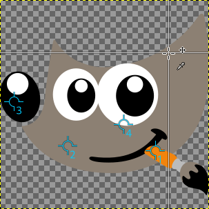

While the Color Picker can display color information about one pixel, the “Sample Points” dialog can display the data of four pixels of the active layer or the image, at the same time. Another important difference is that the values of these points are changed in real time as you are working on the image.
This dialog is a dockable dialog; see the section Section 2.3, “Dialogs and Docking” for help on manipulating it.
You can access it:
-
from the main menu: → → .
-
from the Tab menu in any dockable dialog by clicking the tab menu button
 and selecting
→ .
and selecting
→ .
To create a sample point, Ctrl-click on one of the two measure rulers of the image window and drag the mouse pointer. Two perpendicular guides appear. The sample point is where both guides intersect. You can see its coordinates in the lower left corner of the status area at the bottom. Release the mouse button.

The image shows four already defined sample points and the reticle when you press Ctrl on a measure ruler and then click and drag.
Sample points are shown as a round mark with an order number. You can hide these marks by unchecking → in the main menu.
The “Sample Points” dialog does not automatically open when you create a sample point.
To move or delete a sample point:
-
Using the Color Picker tool, click-and-drag the sample point up to a measure ruler to delete it.
-
Using a paint tool, Ctrl + click-and-drag the sample point up to a measure ruler to delete it.
By default, sampling is performed on all layers. If you want to sample on the active layer only, uncheck → from the tab menu.

Information about all sample points is displayed in this window.
The color of the sampled point is displayed in a swatch box.
In the drop-down list, you can choose between:
- Pixel
-
This choice displays the Red, Green, Blue and Alpha values of the pixel, as numbers between 0 and 255.
- RGB (%)
-
This choice displays the Red, Green, Blue and Alpha values of the pixel, as percentages. It also shows the hexadecimal value of the pixel's color.
- RGB (0..255)
-
This choice displays the Red, Green, Blue and Alpha values of the pixel, as hexadecimal values. It also shows the hexadecimal value of the pixel's color.
- Grayscale (%)
-
- HSV
-
This choice displays the Hue, in degrees, as well as the Saturation, Value and Alpha of the pixel, as percentages.
- CIE LCh
-
- CIE LAB
-
- CIE xyY
-
- CIE Yu'v'
-
- CMYK
-
This choice displays the Cyan, Magenta, Yellow, Black and Alpha values of the pixel, as percentages.
Data are supplied for every channel in the chosen color model. The Alpha is present only if the image has an Alpha channel.
Hex appears only when one of the RGB modes is selected. It displays the hexadecimal code of the HTML Notation.